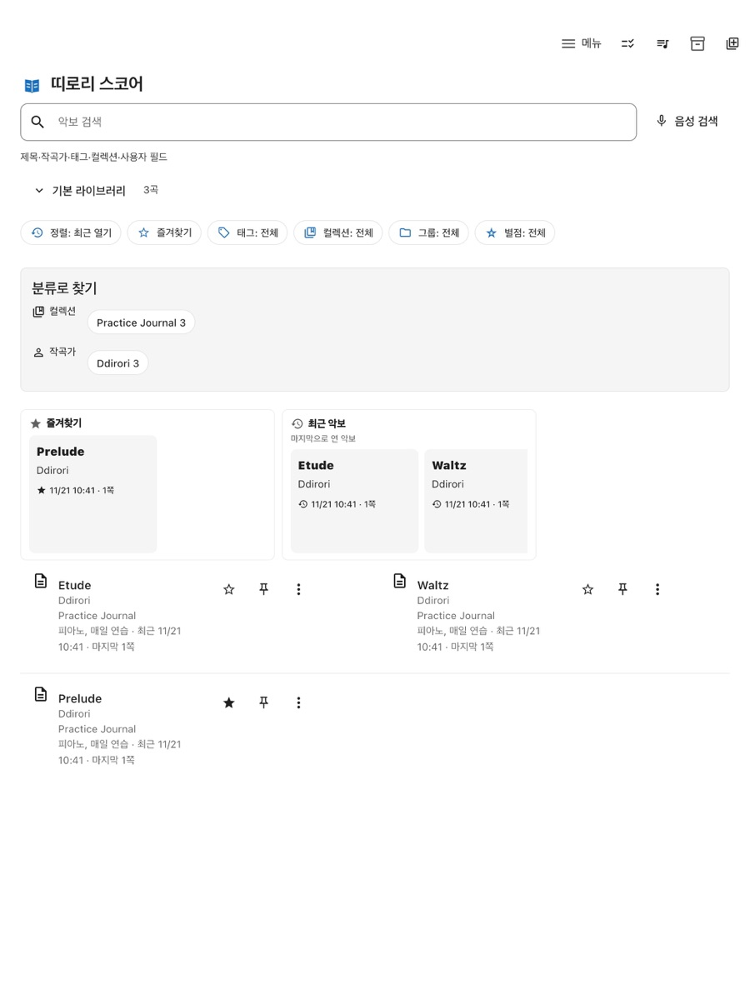
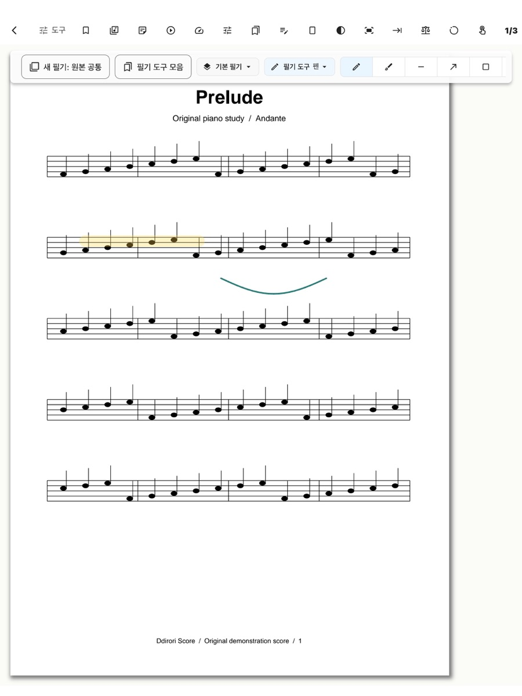

아이패드에서 PDF 악보를 열고 필기하는 방법
메일이나 웹에서 받은 PDF 악보를 띠로리 스코어에 넣고, 다시 볼 마디에 형광펜으로 표시해 보세요.
PDF 한 곡과 iPadOS 15 이상이 필요해요. 화면은 띠로리 스코어 1.1.0입니다.
App Store에서 무료로 받기1. 받은 PDF를 악보함에 넣기
- 메일이나 브라우저에서 받은 PDF를 아이패드 파일 앱에 저장하세요. 이미 내려받았다면 파일 앱에서 이름으로 찾을 수 있어요.
- 띠로리 스코어의 악보함에서 오른쪽 위 악보 추가(겹친 사각형에 +가 있는 아이콘)를 찾으세요.
- PDF 가져오기를 선택하고 파일을 고르세요. 악보가 바로 열리지 않으면 악보함에서 가져온 제목을 누르세요.

2. 다시 볼 마디에 형광펜 긋기
- 악보 위쪽의 도구에서 필기 모드를 켜세요.
- 악보 위 도구 막대의 필기 도구 펜을 누르고 목록에서 형광펜을 고르세요. 다시 연습할 마디에 그으세요.
- 악보함으로 돌아간 뒤 같은 악보를 다시 열어 표시가 남았는지 확인하세요.
